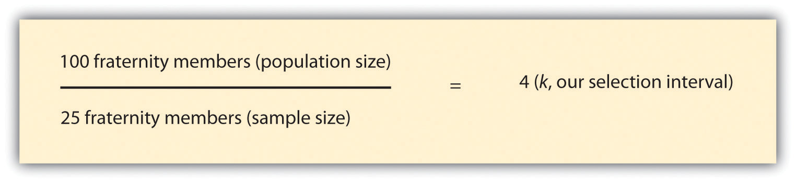

Remember back in Chapter 1 "Introduction" when we saw the cute photo of the babies hanging out together and one of them was wearing a green onesie? I mentioned there that if we were to conclude that all babies wore green based on the photo that we would have committed selective observation. In that example of informal observation, our sampling strategy (just observing the baby in green) was of course faulty, but we nevertheless would have engaged in sampling. Sampling has to do with selecting some subset of one’s group of interest (in this case, babies) and drawing conclusions from that subset. How we sample and who we sample shapes what sorts of conclusions we are able to draw. Ultimately, this chapter focuses on questions about the who or the what that you want to be able to make claims about in your research. In the following sections we’ll define sampling, discuss different types of sampling strategies, and consider how to judge the quality of samples as consumers of social scientific research.
When I teach research methods, my students are sometimes disheartened to discover that the research projects they complete during the course will not make it possible for them to make sweeping claims about “all” of whomever it is that they’re interested in studying. What they fail to realize, however, is that they are not alone. One of the most surprising and frustrating lessons research methods students learn is that there is a difference between one’s population of interest and one’s study sample. While there are certainly exceptions, more often than not a researcher’s population and her or his sample are not the same.
In social scientific research, a populationThe group (be it people, events, etc.) that you want to be able to draw conclusions about at the end of your study. is the cluster of people, events, things, or other phenomena that you are most interested in; it is often the “who” or “what” that you want to be able to say something about at the end of your study. Populations in research may be rather large, such as “the American people,” but they are more typically a little less vague than that. For example, a large study for which the population of interest really is the American people will likely specify which American people, such as adults over the age of 18 or citizens or legal residents. A sampleThe group (be it people, events, etc.) from which you actually collect data., on the other hand, is the cluster of people or events, for example, from or about which you will actually gather data. Some sampling strategies allow researchers to make claims about populations that are much larger than their actually sample with a fair amount of confidence. Other sampling strategies are designed to allow researchers to make theoretical contributions rather than to make sweeping claims about large populations. We’ll discuss both types of strategies later in this chapter.
As I’ve now said a couple of times, it is quite rare for a researcher to gather data from their entire population of interest. This might sound surprising or disappointing until you think about the kinds of research questions that sociologists typically ask. For example, let’s say we wish to answer the following research question: “How do men’s and women’s college experiences differ, and how are they similar?” Would you expect to be able to collect data from all college students across all nations from all historical time periods? Unless you plan to make answering this research question your entire life’s work (and then some), I’m guessing your answer is a resounding no way. So what to do? Does not having the time or resources to gather data from every single person of interest mean having to give up your research interest? Absolutely not. It just means having to make some hard choices about sampling, and then being honest with yourself and your readers about the limitations of your study based on the sample from whom you were able to actually collect data.
SamplingThe process of selecting observations that will be analyzed for research purposes. is the process of selecting observations that will be analyzed for research purposes. Both qualitative and quantitative researchers use sampling techniques to help them identify the what or whom from which they will collect their observations. Because the goals of qualitative and quantitative research differ, however, so, too, do the sampling procedures of the researchers employing these methods. First, we examine sampling types and techniques used in qualitative research. After that, we’ll look at how sampling typically works in quantitative research.
Qualitative researchers typically make sampling choices that enable them to deepen understanding of whatever phenomenon it is that they are studying. In this section we’ll examine the strategies that qualitative researchers typically employ when sampling as well as the various types of samples that qualitative researchers are most likely to use in their work.
Nonprobability samplingSampling techniques for which a person’s likelihood of being selected for membership in the sample is unknown. refers to sampling techniques for which a person’s (or event’s or researcher’s focus’s) likelihood of being selected for membership in the sample is unknown. Because we don’t know the likelihood of selection, we don’t know with nonprobability samples whether a sample represents a larger population or not. But that’s OK, because representing the population is not the goal with nonprobability samples. That said, the fact that nonprobability samples do not represent a larger population does not mean that they are drawn arbitrarily or without any specific purpose in mind (once again, that would mean committing one of the errors of informal inquiry discussed in Chapter 1 "Introduction"). In the following subsection, “Types of Nonprobability Samples,” we’ll take a closer look at the process of selecting research elementsThe individual unit that is the focus of a researcher’s investigation; possible elements in social science include people, documents, organizations, groups, beliefs, or behaviors. when drawing a nonprobability sample. But first, let’s consider why a researcher might choose to use a nonprobability sample.
So when are nonprobability samples ideal? One instance might be when we’re designing a research project. For example, if we’re conducting survey research, we may want to administer our survey to a few people who seem to resemble the folks we’re interested in studying in order to help work out kinks in the survey. We might also use a nonprobability sample at the early stages of a research project, if we’re conducting a pilot study or some exploratory research. This can be a quick way to gather some initial data and help us get some idea of the lay of the land before conducting a more extensive study. From these examples, we can see that nonprobability samples can be useful for setting up, framing, or beginning research. But it isn’t just early stage research that relies on and benefits from nonprobability sampling techniques.
Researchers also use nonprobability samples in full-blown research projects. These projects are usually qualitative in nature, where the researcher’s goal is in-depth, idiographic understanding rather than more general, nomothetic understanding. Evaluation researchers whose aim is to describe some very specific small group might use nonprobability sampling techniques, for example. Researchers interested in contributing to our theoretical understanding of some phenomenon might also collect data from nonprobability samples. Maren Klawiter (1999)Klawiter, M. (1999). Racing for the cure, walking women, and toxic touring: Mapping cultures of action within the Bay Area terrain of breast cancer. Social Problems, 46, 104–126. relied on a nonprobability sample for her study of the role that culture plays in shaping social change. Klawiter conducted participant observation in three very different breast cancer organizations to understand “the bodily dimensions of cultural production and collective action.” Her intensive study of these three organizations allowed Klawiter to deeply understand each organization’s “culture of action” and, subsequently, to critique and contribute to broader theories of social change and social movement organization. Thus researchers interested in contributing to social theories, by either expanding on them, modifying them, or poking holes in their propositions, may use nonprobability sampling techniques to seek out cases that seem anomalous in order to understand how theories can be improved.
In sum, there are a number and variety of instances in which the use of nonprobability samples makes sense. We’ll examine several specific types of nonprobability samples in the next subsection.
There are several types of nonprobability samples that researchers use. These include purposive samples, snowball samples, quota samples, and convenience samples. While the latter two strategies may be used by quantitative researchers from time to time, they are more typically employed in qualitative research, and because they are both nonprobability methods, we include them in this section of the chapter.
To draw a purposive sampleA nonprobability sample type for which a researcher seeks out particular study elements that meet specific criteria that the researcher has identified., a researcher begins with specific perspectives in mind that he or she wishes to examine and then seeks out research participants who cover that full range of perspectives. For example, if you are studying students’ satisfaction with their living quarters on campus, you’ll want to be sure to include students who stay in each of the different types or locations of on-campus housing in your study. If you only include students from 1 of 10 dorms on campus, you may miss important details about the experiences of students who live in the 9 dorms you didn’t include in your study. In my own interviews of young people about their workplace sexual harassment experiences, I and my coauthors used a purposive sampling strategy; we used participants’ prior responses on a survey to ensure that we included both men and women in the interviews and that we included participants who’d had a range of harassment experiences, from relatively minor experiences to much more severe harassment.
While purposive sampling is often used when one’s goal is to include participants who represent a broad range of perspectives, purposive sampling may also be used when a researcher wishes to include only people who meet very narrow or specific criteria. For example, in their study of Japanese women’s perceptions of intimate partner violence, Miyoko Nagae and Barbara L. Dancy (2010)Nagae, M., & Dancy, B. L. (2010). Japanese women’s perceptions of intimate partner violence (IPV). Journal of Interpersonal Violence, 25, 753–766. limited their study only to participants who had experienced intimate partner violence themselves, were at least 18 years old, had been married and living with their spouse at the time that the violence occurred, were heterosexual, and were willing to be interviewed. In this case, the researchers’ goal was to find participants who had had very specific experiences rather than finding those who had had quite diverse experiences, as in the preceding example. In both cases, the researchers involved shared the goal of understanding the topic at hand in as much depth as possible.
Qualitative researchers sometimes rely on snowball samplingA nonprobability sample type for which a researcher recruits study participants by asking prior participants to refer others. techniques to identify study participants. In this case, a researcher might know of one or two people she’d like to include in her study but then relies on those initial participants to help identify additional study participants. Thus the researcher’s sample builds and becomes larger as the study continues, much as a snowball builds and becomes larger as it rolls through the snow.
Snowball sampling is an especially useful strategy when a researcher wishes to study some stigmatized group or behavior. For example, a researcher who wanted to study how people with genital herpes cope with their medical condition would be unlikely to find many participants by posting a call for interviewees in the newspaper or making an announcement about the study at some large social gathering. Instead, the researcher might know someone with the condition, interview that person, and then be referred by the first interviewee to another potential subject. Having a previous participant vouch for the trustworthiness of the researcher may help new potential participants feel more comfortable about being included in the study.
Snowball sampling is sometimes referred to as chain referral sampling. One research participant refers another, and that person refers another, and that person refers another—thus a chain of potential participants is identified. In addition to using this sampling strategy for potentially stigmatized populations, it is also a useful strategy to use when the researcher’s group of interest is likely to be difficult to find, not only because of some stigma associated with the group, but also because the group may be relatively rare. This was the case for Steven M. Kogan and colleagues (Kogan, Wejnert, Chen, Brody, & Slater, 2011)Kogan, S. M., Wejnert, C., Chen, Y., Brody, G. H., & Slater, L. M. (2011). Respondent-driven sampling with hard-to-reach emerging adults: An introduction and case study with rural African Americans. Journal of Adolescent Research, 26, 30–60. who wished to study the sexual behaviors of non-college-bound African American young adults who lived in high-poverty rural areas. The researchers first relied on their own networks to identify study participants, but because members of the study’s target population were not easy to find, access to the networks of initial study participants was very important for identifying additional participants. Initial participants were given coupons to pass on to others they knew who qualified for the study. Participants were given an added incentive for referring eligible study participants; they received not only $50.00 for participating in the study but also $20.00 for each person they recruited who also participated in the study. Using this strategy, Kogan and colleagues succeeded in recruiting 292 study participants.
Quota samplingA nonprobability sample type for which a researcher identifies subgroups within a population of interest and then selects some predetermined number of elements from within each subgroup. is another nonprobability sampling strategy. This type of sampling is actually employed by both qualitative and quantitative researchers, but because it is a nonprobability method, we’ll discuss it in this section. When conducting quota sampling, a researcher identifies categories that are important to the study and for which there is likely to be some variation. Subgroups are created based on each category and the researcher decides how many people (or documents or whatever element happens to be the focus of the research) to include from each subgroup and collects data from that number for each subgroup.
Let’s go back to the example we considered previously of student satisfaction with on-campus housing. Perhaps there are two types of housing on your campus: apartments that include full kitchens and dorm rooms where residents do not cook for themselves but eat in a dorm cafeteria. As a researcher, you might wish to understand how satisfaction varies across these two types of housing arrangements. Perhaps you have the time and resources to interview 20 campus residents, so you decide to interview 10 from each housing type. It is possible as well that your review of literature on the topic suggests that campus housing experiences vary by gender. If that is that case, perhaps you’ll decide on four important subgroups: men who live in apartments, women who live in apartments, men who live in dorm rooms, and women who live in dorm rooms. Your quota sample would include five people from each subgroup.
In 1936, up-and-coming pollster George Gallup made history when he successfully predicted the outcome of the presidential election using quota sampling methods. The leading polling entity at the time, The Literary Digest, predicted that Alfred Landon would beat Franklin Roosevelt in the presidential election by a landslide. When Gallup’s prediction that Roosevelt would win, turned out to be correct, “the Gallup Poll was suddenly on the map” (Van Allen, 2011).Van Allen, S. (2011). Gallup corporate history. Retrieved from http://www.gallup.com/corporate/1357/Corporate-History.aspx#2 Gallup successfully predicted subsequent elections based on quota samples, but in 1948, Gallup incorrectly predicted that Dewey would beat Truman in the US presidential election.For more information about the 1948 election and other historically significant dates related to measurement, see the PBS timeline of “The first measured century” at http://www.pbs.org/fmc/timeline/e1948election.htm. Among other problems, the fact that Gallup’s quota categories did not represent those who actually voted (Neuman, 2007)Neuman, W. L. (2007). Basics of social research: Qualitative and quantitative approaches (2nd ed.). Boston, MA: Pearson. underscores the point that one should avoid attempting to make statistical generalizations from data collected using quota sampling methods.If you are interested in the history of polling, I recommend a recent book: Fried, A. (2011). Pathways to polling: Crisis, cooperation, and the making of public opinion professions. New York, NY: Routledge. While quota sampling offers the strength of helping the researcher account for potentially relevant variation across study elements, it would be a mistake to think of this strategy as yielding statistically representative findings.
Finally, convenience samplingA nonprobability sample type for which a researcher gathers data from the elements that happen to be convenient; also referred to as haphazard sampling. is another nonprobability sampling strategy that is employed by both qualitative and quantitative researchers. To draw a convenience sample, a researcher simply collects data from those people or other relevant elements to which he or she has most convenient access. This method, also sometimes referred to as haphazard sampling, is most useful in exploratory research. It is also often used by journalists who need quick and easy access to people from their population of interest. If you’ve ever seen brief interviews of people on the street on the news, you’ve probably seen a haphazard sample being interviewed. While convenience samples offer one major benefit—convenience—we should be cautious about generalizing from research that relies on convenience samples.
Table 7.1 Types of Nonprobability Samples
| Sample type | Description |
|---|---|
| Purposive | Researcher seeks out elements that meet specific criteria. |
| Snowball | Researcher relies on participant referrals to recruit new participants. |
| Quota | Researcher selects cases from within several different subgroups. |
| Convenience | Researcher gathers data from whatever cases happen to be convenient. |
Quantitative researchers are often interested in being able to make generalizations about groups larger than their study samples. While there are certainly instances when quantitative researchers rely on nonprobability samples (e.g., when doing exploratory or evaluation research), quantitative researchers tend to rely on probability sampling techniques. The goals and techniques associated with probability samples differ from those of nonprobability samples. We’ll explore those unique goals and techniques in this section.
Unlike nonprobability sampling, probability samplingSampling techniques for which a person’s likelihood of being selected for membership in the sample is known. refers to sampling techniques for which a person’s (or event’s) likelihood of being selected for membership in the sample is known. You might ask yourself why we should care about a study element’s likelihood of being selected for membership in a researcher’s sample. The reason is that, in most cases, researchers who use probability sampling techniques are aiming to identify a representative sampleA sample that resembles the population from which it was drawn in all the ways that are important for the research being conducted. from which to collect data. A representative sample is one that resembles the population from which it was drawn in all the ways that are important for the research being conducted. If, for example, you wish to be able to say something about differences between men and women at the end of your study, you better make sure that your sample doesn’t contain only women. That’s a bit of an oversimplification, but the point with representativeness is that if your population varies in some way that is important to your study, your sample should contain the same sorts of variation.
Obtaining a representative sample is important in probability sampling because a key goal of studies that rely on probability samples is generalizabilityThe idea that a study’s results will tell us something about a group larger than the sample from which the findings were generated.. In fact, generalizability is perhaps the key feature that distinguishes probability samples from nonprobability samples. Generalizability refers to the idea that a study’s results will tell us something about a group larger than the sample from which the findings were generated. In order to achieve generalizability, a core principle of probability sampling is that all elements in the researcher’s target population have an equal chance of being selected for inclusion in the study. In research, this is the principle of random selectionThe principle that all elements in a researcher’s target population have an equal chance of being selected for inclusion in the study.. Random selection is a mathematical process that we won’t go into too much depth about here, but if you have taken or plan to take a statistics course, you’ll learn more about it there. The important thing to remember about random selection here is that, as previously noted, it is a core principal of probability sampling. If a researcher uses random selection techniques to draw a sample, he or she will be able to estimate how closely the sample represents the larger population from which it was drawn by estimating the sampling error. Sampling errorThe extent to which a sample represents its population on a particular parameter. is a statistical calculation of the difference between results from a sample and the actual parametersThe actual characteristics of a population on any given variable; determined by measuring all elements in a population (as opposed to measuring elements from a sample). of a population.
There are a variety of probability samples that researchers may use. These include simple random samples, systematic samples, stratified samples, and cluster samples.
Simple random samplesThe most basic type of probability sample; a researcher begins with a list of every member of his or her population of interest, numbers each element sequentially, and then randomly selects the elements from which he or she will collect data. are the most basic type of probability sample, but their use is not particularly common. Part of the reason for this may be the work involved in generating a simple random sample. To draw a simple random sample, a researcher starts with a list of every single member, or element, of his or her population of interest. This list is sometimes referred to as a sampling frameA list of all elements in a population.. Once that list has been created, the researcher numbers each element sequentially and then randomly selects the elements from which he or she will collect data. To randomly select elements, researchers use a table of numbers that have been generated randomly. There are several possible sources for obtaining a random number table. Some statistics and research methods textbooks offer such tables as appendices to the text. Perhaps a more accessible source is one of the many free random number generators available on the Internet. A good online source is the website Stat Trek, which contains a random number generator that you can use to create a random number table of whatever size you might need (http://stattrek.com/Tables/Random.aspx). Randomizer.org also offers a useful random number generator (http://randomizer.org).
As you might have guessed, drawing a simple random sample can be quite tedious. Systematic samplingA researcher divides a study population into relevant subgroups then draws a sample from each subgroup. techniques are somewhat less tedious but offer the benefits of a random sample. As with simple random samples, you must be able to produce a list of every one of your population elements. Once you’ve done that, to draw a systematic sample you’d simply select every kth element on your list. But what is k, and where on the list of population elements does one begin the selection process? k is your selection intervalThe distance between elements selected for inclusion in a study. or the distance between the elements you select for inclusion in your study. To begin the selection process, you’ll need to figure out how many elements you wish to include in your sample. Let’s say you want to interview 25 fraternity members on your campus, and there are 100 men on campus who are members of fraternities. In this case, your selection interval, or k, is 4. To arrive at 4, simply divide the total number of population elements by your desired sample size. This process is represented in Figure 7.5 "Formula for Determining Selection Interval for Systematic Sample".
Figure 7.5 Formula for Determining Selection Interval for Systematic Sample
To determine where on your list of population elements to begin selecting the names of the 25 men you will interview, select a random number between 1 and k, and begin there. If we randomly select 3 as our starting point, we’d begin by selecting the third fraternity member on the list and then select every fourth member from there. This might be easier to understand if you can see it visually. Table 7.2 "Systematic Sample of 25 Fraternity Members" lists the names of our hypothetical 100 fraternity members on campus. You’ll see that the third name on the list has been selected for inclusion in our hypothetical study, as has every fourth name after that. A total of 25 names have been selected.
Table 7.2 Systematic Sample of 25 Fraternity Members
| Number | Name | Include in study? | Number | Name | Include in study? | |
|---|---|---|---|---|---|---|
| 1 | Jacob | 51 | Blake | Yes | ||
| 2 | Ethan | 52 | Oliver | |||
| 3 | Michael | Yes | 53 | Cole | ||
| 4 | Jayden | 54 | Carlos | |||
| 5 | William | 55 | Jaden | Yes | ||
| 6 | Alexander | 56 | Jesus | |||
| 7 | Noah | Yes | 57 | Alex | ||
| 8 | Daniel | 58 | Aidan | |||
| 9 | Aiden | 59 | Eric | Yes | ||
| 10 | Anthony | 60 | Hayden | |||
| 11 | Joshua | Yes | 61 | Brian | ||
| 12 | Mason | 62 | Max | |||
| 13 | Christopher | 63 | Jaxon | Yes | ||
| 14 | Andrew | 64 | Brian |
| Number | Name | Include in study? | Number | Name | Include in study? | |
|---|---|---|---|---|---|---|
| 15 | David | Yes | 65 | Matthew | ||
| 16 | Logan | 66 | Elijah | |||
| 17 | James | 67 | Joseph | Yes | ||
| 18 | Gabriel | 68 | Benjamin | |||
| 19 | Ryan | Yes | 69 | Samuel | ||
| 20 | Jackson | 70 | John | |||
| 21 | Nathan | 71 | Jonathan | Yes | ||
| 22 | Christian | 72 | Liam | |||
| 23 | Dylan | Yes | 73 | Landon | ||
| 24 | Caleb | 74 | Tyler | |||
| 25 | Lucas | 75 | Evan | Yes | ||
| 26 | Gavin | 76 | Nicholas | |||
| 27 | Isaac | Yes | 77 | Braden | ||
| 28 | Luke | 78 | Angel | |||
| 29 | Brandon | 79 | Jack | Yes | ||
| 30 | Isaiah | 80 | Jordan | |||
| 31 | Owen | Yes | 81 | Carter | ||
| 32 | Conner | 82 | Justin | |||
| 33 | Jose | 83 | Jeremiah | Yes | ||
| 34 | Julian | 84 | Robert | |||
| 35 | Aaron | Yes | 85 | Adrian | ||
| 36 | Wyatt | 86 | Kevin | |||
| 37 | Hunter | 87 | Cameron | Yes | ||
| 38 | Zachary | 88 | Thomas | |||
| 39 | Charles | Yes | 89 | Austin | ||
| 40 | Eli | 90 | Chase | |||
| 41 | Henry | 91 | Sebastian | Yes | ||
| 42 | Jason | 92 | Levi | |||
| 43 | Xavier | Yes | 93 | Ian | ||
| 44 | Colton | 94 | Dominic | |||
| 45 | Juan | 95 | Cooper | Yes | ||
| 46 | Josiah | 96 | Luis | |||
| 47 | Ayden | Yes | 97 | Carson | ||
| 48 | Adam | 98 | Nathaniel | |||
| 49 | Brody | 99 | Tristan | Yes | ||
| 50 | Diego | 100 | Parker | |||
| Note: In case you’re wondering how I came up with 100 unique names for this table, I’ll let you in on a little secret: lists of popular baby names can be great resources for researchers. I used the list of top 100 names for boys based on Social Security Administration statistics for this table. I often use baby name lists to come up with pseudonyms for field research subjects and interview participants. See Family Education. (n.d.). Name lab. Retrieved from http://baby-names.familyeducation.com/popular-names/boys. | ||||||
There is one clear instance in which systematic sampling should not be employed. If your sampling frame has any pattern to it, you could inadvertently introduce bias into your sample by using a systemic sampling strategy. This is sometimes referred to as the problem of periodicityThe tendency for a pattern to occur at regular intervals.. Periodicity refers to the tendency for a pattern to occur at regular intervals. Let’s say, for example, that you wanted to observe how people use the outdoor public spaces on your campus. Perhaps you need to have your observations completed within 28 days and you wish to conduct four observations on randomly chosen days. Table 7.3 "Systematic Sample of Observation Days" shows a list of the population elements for this example. To determine which days we’ll conduct our observations, we’ll need to determine our selection interval. As you’ll recall from the preceding paragraphs, to do so we must divide our population size, in this case 28 days, by our desired sample size, in this case 4 days. This formula leads us to a selection interval of 7. If we randomly select 2 as our starting point and select every seventh day after that, we’ll wind up with a total of 4 days on which to conduct our observations. You’ll see how that works out in the following table.
Table 7.3 Systematic Sample of Observation Days
| Number | Day | Include in study? | Number | Day | Include in study? | |
|---|---|---|---|---|---|---|
| 1 | Monday | 15 | Monday | |||
| 2 | Tuesday | Yes | 16 | Tuesday | Yes | |
| 3 | Wednesday | 17 | Wednesday | |||
| 4 | Thursday | 18 | Thursday | |||
| 5 | Friday | 19 | Friday | |||
| 6 | Saturday | 20 | Saturday | |||
| 7 | Sunday | 21 | Sunday | |||
| 8 | Monday | 22 | Monday | |||
| 9 | Tuesday | Yes | 23 | Tuesday | Yes | |
| 10 | Wednesday | 24 | Wednesday | |||
| 11 | Thursday | 25 | Thursday | |||
| 12 | Friday | 26 | Friday | |||
| 13 | Saturday | 27 | Saturday | |||
| 14 | Sunday | 28 | Sunday |
Do you notice any problems with our selection of observation days? Apparently we’ll only be observing on Tuesdays. As you have probably figured out, that isn’t such a good plan if we really wish to understand how public spaces on campus are used. My guess is that weekend use probably differs from weekday use, and that use may even vary during the week, just as class schedules do. In cases such as this, where the sampling frame is cyclical, it would be better to use a stratified sampling techniqueA researcher divides the study population into relevant subgroups then draws a sample from within each subgroup.. In stratified sampling, a researcher will divide the study population into relevant subgroups and then draw a sample from each subgroup. In this example, we might wish to first divide our sampling frame into two lists: weekend days and weekdays. Once we have our two lists, we can then apply either simple random or systematic sampling techniques to each subgroup.
Stratified sampling is a good technique to use when, as in our example, a subgroup of interest makes up a relatively small proportion of the overall sample. In our example of a study of use of public space on campus, we want to be sure to include weekdays and weekends in our sample, but because weekends make up less than a third of an entire week, there’s a chance that a simple random or systematic strategy would not yield sufficient weekend observation days. As you might imagine, stratified sampling is even more useful in cases where a subgroup makes up an even smaller proportion of the study population, say, for example, if we want to be sure to include both men’s and women’s perspectives in a study, but men make up only a small percentage of the population. There’s a chance simple random or systematic sampling strategy might not yield any male participants, but by using stratified sampling, we could ensure that our sample contained the proportion of men that is reflective of the larger population.
Up to this point in our discussion of probability samples, we’ve assumed that researchers will be able to access a list of population elements in order to create a sampling frame. This, as you might imagine, is not always the case. Let’s say, for example, that you wish to conduct a study of hairstyle preferences across the United States. Just imagine trying to create a list of every single person with (and without) hair in the country. Basically, we’re talking about a list of every person in the country. Even if you could find a way to generate such a list, attempting to do so might not be the most practical use of your time or resources. When this is the case, researchers turn to cluster sampling. Cluster samplingA researcher begins by sampling groups of population elements and then selects elements from within those groups. occurs when a researcher begins by sampling groups (or clusters) of population elements and then selects elements from within those groups.
Let’s take a look at a couple more examples. Perhaps you are interested in the workplace experiences of public librarians. Chances are good that obtaining a list of all librarians that work for public libraries would be rather difficult. But I’ll bet you could come up with a list of all public libraries without too much hassle. Thus you could draw a random sample of libraries (your cluster) and then draw another random sample of elements (in this case, librarians) from within the libraries you initially selected. Cluster sampling works in stages. In this example, we sampled in two stages. As you might have guessed, sampling in multiple stages does introduce the possibility of greater error (each stage is subject to its own sampling error), but it is nevertheless a highly efficient method.
Jessica Holt and Wayne Gillespie (2008)Holt, J. L., & Gillespie, W. (2008). Intergenerational transmission of violence, threatened egoism, and reciprocity: A test of multiple pychosocial factors affecting intimate partner violence. American Journal of Criminal Justice, 33, 252–266. used cluster sampling in their study of students’ experiences with violence in intimate relationships. Specifically, the researchers randomly selected 14 classes on their campus and then drew a random subsample of students from those classes. But you probably know from your experience with college classes that not all classes are the same size. So if Holt and Gillespie had simply randomly selected 14 classes and then selected the same number of students from each class to complete their survey, then students in the smaller of those classes would have had a greater chance of being selected for the study than students in the larger classes. Keep in mind with random sampling the goal is to make sure that each element has the same chance of being selected. When clusters are of different sizes, as in the example of sampling college classes, researchers often use a method called probability proportionate to sizeA cluster sampling technique in which each cluster is given a chance of selection based on its size. (PPS). This means that they take into account that their clusters are of different sizes. They do this by giving clusters different chances of being selected based on their size so that each element within those clusters winds up having an equal chance of being selected.
Table 7.4 Types of Probability Samples
| Sample type | Description |
|---|---|
| Simple random | Researcher randomly selects elements from sampling frame. |
| Systematic | Researcher selects every kth element from sampling frame. |
| Stratified | Researcher creates subgroups then randomly selects elements from each subgroup. |
| Cluster | Researcher randomly selects clusters then randomly selects elements from selected clusters. |
We read and hear about research results so often that we might overlook the need to ask important questions about where research participants come from and how they are identified for inclusion in a research project. It is easy to focus only on findings when we’re busy and when the really interesting stuff is in a study’s conclusions, not its procedures. But now that you have some familiarity with the variety of procedures for selecting study participants, you are equipped to ask some very important questions about the findings you read and to be a more responsible consumer of research.
Have you ever been a participant in someone’s research? If you have ever taken an introductory psychology or sociology class at a large university, that’s probably a silly question to ask. Social science researchers on college campuses have a luxury that researchers elsewhere may not share—they have access to a whole bunch of (presumably) willing and able human guinea pigs. But that luxury comes at a cost—sample representativeness. One study of top academic journals in psychology found that over two-thirds (68%) of participants in studies published by those journals were based on samples drawn in the United States (Arnett, 2008).Arnett, J. J. (2008). The neglected 95%: Why American psychology needs to become less American. American Psychologist, 63, 602–614. Further, the study found that two-thirds of the work that derived from US samples published in the Journal of Personality and Social Psychology was based on samples made up entirely of American undergraduates taking psychology courses.
These findings certainly beg the question: What do we actually learn from social scientific studies and about whom do we learn it? That is exactly the concern raised by Joseph Henrich and colleagues (Henrich, Heine, & Norenzayan, 2010),Henrich, J., Heine, S. J., & Norenzayan, A. (2010). The weirdest people in the world? Behavioral and Brain Sciences, 33, 61–135. authors of the article “The Weirdest People in the World?” In their piece, Henrich and colleagues point out that behavioral scientists very commonly make sweeping claims about human nature based on samples drawn only from WEIRD (Western, educated, industrialized, rich, and democratic) societies, and often based on even narrower samples, as is the case with many studies relying on samples drawn from college classrooms. As it turns out, many robust findings about the nature of human behavior when it comes to fairness, cooperation, visual perception, trust, and other behaviors are based on studies that excluded participants from outside the United States and sometimes excluded anyone outside the college classroom (Begley, 2010).Newsweek magazine published an interesting story about Henrich and his colleague’s study: Begley, S. (2010). What’s really human? The trouble with student guinea pigs. Retrieved from http://www.newsweek.com/2010/07/23/what-s-really-human.html This certainly raises questions about what we really know about human behavior as opposed to US resident or US undergraduate behavior. Of course not all research findings are based on samples of WEIRD folks like college students. But even then it would behoove us to pay attention to the population on which studies are based and the claims that are being made about to whom those studies apply.
In the preceding discussion, the concern is with researchers making claims about populations other than those from which their samples were drawn. A related, but slightly different, potential concern is sampling biasOccurs when the elements selected for inclusion in a study do not represent the larger population from which they were drawn.. Bias in sampling occurs when the elements selected for inclusion in a study do not represent the larger population from which they were drawn. For example, a poll conducted online by a newspaper asking for the public’s opinion about some local issue will certainly not represent the public since those without access to computers or the Internet, those who do not read that paper’s website, and those who do not have the time or interest will not answer the question.
Another thing to keep in mind is that just because a sample may be representative in all respects that a researcher thinks are relevant, there may be aspects that are relevant that didn’t occur to the researcher when she was drawing her sample. You might not think that a person’s phone would have much to do with their voting preferences, for example. But had pollsters making predictions about the results of the 2008 presidential election not been careful to include both cell phone–only and landline households in their surveys, it is possible that their predictions would have underestimated Barack Obama’s lead over John McCain because Obama was much more popular among cell-only users than McCain (Keeter, Dimock, & Christian, 2008).Keeter, S., Dimock, M., & Christian, L. (2008). Calling cell phones in ’08 pre-election polls. The Pew Research Center for the People and the Press. Retrieved from http://people-press.org/http://people-press.org/files/legacy-pdf/cell-phone-commentary.pdf
So how do we know when we can count on results that are being reported to us? While there might not be any magic or always-true rules we can apply, there are a couple of things we can keep in mind as we read the claims researchers make about their findings. First, remember that sample quality is determined only by the sample actually obtained, not by the sampling method itself. A researcher may set out to administer a survey to a representative sample by correctly employing a random selection technique, but if only a handful of the people sampled actually respond to the survey, the researcher will have to be very careful about the claims he can make about his survey findings. Another thing to keep in mind, as demonstrated by the preceding discussion, is that researchers may be drawn to talking about implications of their findings as though they apply to some group other than the population actually sampled. Though this tendency is usually quite innocent and does not come from a place of malice, it is all too tempting a way to talk about findings; as consumers of those findings, it is our responsibility to be attentive to this sort of (likely unintentional) bait and switch.
Finally, keep in mind that a sample that allows for comparisons of theoretically important concepts or variables is certainly better than one that does not allow for such comparisons. In a study based on a nonrepresentative sample, for example, we can learn about the strength of our social theories by comparing relevant aspects of social processes. Klawiter’s previously mentioned study (1999)Klawiter, M. (1999). Racing for the cure, walking women, and toxic touring: Mapping cultures of action within the Bay Area terrain of breast cancer. Social Problems, 46, 104–126. of three carefully chosen breast cancer activist groups allowed her to contribute to our understandings of activism by addressing potential weaknesses in theories of social change.
At their core, questions about sample quality should address who has been sampled, how they were sampled, and for what purpose they were sampled. Being able to answer those questions will help you better understand, and more responsibly read, research results.